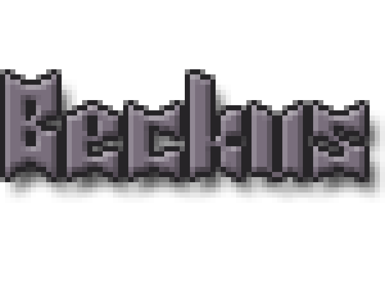

Click below to play in-browser!

About the Game
Team Swan Song
Mark Pareja, Hao Quach, Steven Kuo, Ian Tokuyama, Steven Quinanola
(My main roles: art, animation, music, story elements, quality assurance)
{kind=link}
{kind=link}
{kind=link}
{kind=link}
Game Concept
My team made this game for our Capstone Game Project class during our senior year as Computer Game Science majors. Though it was not fully realized in this playable vertical slice, the idea behind Swan Song was to create a hard-fought redemption story. The exiled king was meant to travel throughout his ravaged kingdom while incognito, inadvertently inspiring change among his former subjects but questioning his actions all along the way. The intended twist was that rather than have your gear and stats upgrade as the journey progresses, your weapon and armor would slowly degrade along the way, adding new levels of challenge and encouraging the player to approach battles in a more cautious and calculated manner.
The World of Swan Song
This was once a simpler place with separate small villages scattered across the land. However, a couple hundred years ago, things became a bit more complicated. The continent had begun to split into city states and they started to fight amongst each other for lands and systems. This forced some people to migrate to less-habitable lands. One of the city states managed to take over a majority of the lands rich in resources and grew to be a great kingdom called Purtoria. Over several decades, Purtoria was able to solidify its power and influence and enjoyed peace for a number of years. While the Purtorians grew complacent in their time of peace, three different countries arose along their surrounding borders called Orenheim, Ruk’ha, and Beluvin. These countries formed the “ORB Alliance” to take back the land that was stolen from them by Purtoria. The war ended after three years and after the victory of the ORB Alliance, the lands of Purtoria were thrown into disarray as a power vacuum ensued and the alliance began to dissolve. The three countries fought over land, resources, and strategic positions and the region descended into chaos.
The Characters of Swan Song
Cygnus Calrissian Purtora was born into royalty, he had always been training in order to take over his family's vast kingdom. As he grew, his father -- the king -- was still expanding the kingdom's borders. By the time Cygnus reached the end of his teens, his father had stopped expanding the borders because he exhausted his war resources and they needed to take some time to recuperate. When Cygnus was a few years into adulthood, his father had succumbed to illness and Cygnus assumed the throne. Instead of continuing the skirmishes, Cygnus decided to build a fortress and fortify his defenses rather than expanding. He was more interested in having artisans come in and "beautify" the country. The commoners did not mind him stopping the expansion since they would not have to go to war and potentially die. When Cygnus reached his thirties, the ORB Alliance declared war upon his kingdom. After three years of fighting a defensive battle and attempts at a more diplomatic approach, Cygnus made a tactical blunder and was taken prisoner. While en route to be executed in the capital of his own kingdom before his subjects, he escaped imprisonment and went into hiding. The ORB Alliance executed his family and he fled to the Frostbog to the north.

Beckus Harrison is a farmer who was once a subject of Purtoria. Living on the outskirts of Purtoria, she now thrives in an Orenheim-occupied territory. She protects her farmland and fellow farm workers from Orenheim under an agreement between Commander Dhorke and herself.
Commander Dhorke is an Orenheim commander in charge of the Orenheim troops in the area. He was beaten by Beckus in a test of strength, so he respects her and leaves her alone.

Captain Nickelas Snowfinch is the leader of the Beluvish Mercenary Navy. He cares about coin above all else. He is tall and lanky, but quick on his feet and skilled with his saber.